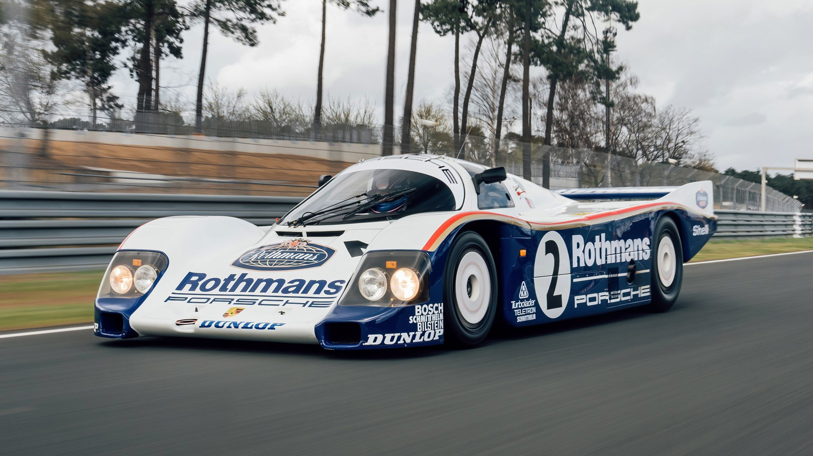

Porsche es una marca icónica en el mundo
automovilístico,conocida por su pasión por la
ingeniería de alto rendimiento y el diseño excepcional.
Desde su fundación en 1931 por Ferdinand Porsche,
la marca ha creado una serie de vehículos legendarios
que combinan la elegancia con la potencia.
En esta página, te invitamos a explorar una
selección de los mejores autos de Porsche,
desde los clásicos intemporales hasta las últimas
creaciones de vanguardia. Descubre cómo Porsche ha
continuado evolucionando y definiendo el estándar
de excelencia en la industria automotriz.
Porsche 911 2.7 Carrera RS
El 2.7 Carrera RS destaca entre los 911.
Fue producido para ser homologado y hacer que en 1973
Porsche saltará a la clase GT del Grupo 4 después de que
el 917 quedara obsoleto por cambios de normativa.
El resultado fue el RSR de 2.8 litros casi imbatible,
ganando seis de las nueve rondas y el Campeonato
de Europa, incluida una victoria general en las 24 Horas
de Daytona y Targa Florio de 1973.En última instancia,
fue el primer intento real de Porsche de producir un
coche de carreras minimalista para la carretera y que
permitió la llegada de los modelos más actuales GT3,
GT3 RS y GT2 RS.

1979 Porsche 935
Uno de los autos Porsche más distintivos,
basado en la plataforma 911, fue y sigue siendo el 935.
El auto fue desarrollado para las carreras del Grupo 5
de la FIA y estaba disponible para su compra por equipos
Privateer. El ejemplo que se muestra aquí es el número de
chasis 27 y es uno de los 37 coches de clientes vendidos
entre 1977 y 1979.Al ser un ejemplar de 1979, representa
la última evolución del coche. Era propiedad de Otis
Chandler, quien también lo conducía, quien también poseía
el Porsche 917/30 de 1973 anterior, de ahí que los dos
autos tengan esquemas de carrocería a juego. El motor de
seis cilindros turboalimentado de 3.0 litros se basa en
la unidad 930 y genera 650 caballos de fuerza, aunque es
posible alcanzar más de 800. Gracias al estilo salvaje
con un alerón trasero de cola de ballena de gran tamaño,
el automóvil se ganó el apodo de "Moby Dick".

Porsche 959
El 959 era capaz de pasar de 0 a 100 kmh en menos
de cuatro segundos, superando los 338 kmh, el Porsche 959
de carretera no tenía competidor en rendimiento desde su
lanzamiento en 1986. Utilizaba un sofisticado sistema que
variaba la relación de división del par delantero trasero
según las condiciones de la carretera. Probado por primera
vez en el 911SC en el Dakar de 1984, Porsche sorprendió
con una victoria general en su debut. El sistema AWD se
reutilizó para el Grupo B y nació el proyecto 959.En 1986,
dos 959s equipados con motores 2.8 litros turbo derivadas
de los 956 / 962s cruzaron la línea en primera y segunda
posición. Aunque originalmente se construyó para el Grupo
B, cuando el 959 estuvo listo para competir, la clase fue
eliminada por las nuevas reglas. La elegante tracción en
las cuatro ruedas PSK se ha realizado para la carretera en
todos los modelos 911 Turbo desde el 993.

Porsche 956 y 962
El mejor coche de Le Mans. El 956 logró cuatro
victorias generales entre 1982 y 1985, incluso compitió
con su sucesor, el 962, que obtuvo otras dos victorias
consecutivas.Reemplazó al 936 en la nueva clase del Grupo
C, y presentaba novedades en el diseño. El 956 de Porsche
redujo su peso a unos 800 kg gracias a su monocasco 100%
de aluminio. También introdujo una transmisión de doble
embrague, desarrollada más tarde para su uso en sus coches
de carretera. El 956 fue el primer Porsche en utilizar la
aerodinámica de efecto suelo, lo que resultó en niveles
de carga aerodinámica hasta tres veces mayores que las
del 917. Su legado perduró en el 962, que era un 956
alargado con un nuevo motor.
